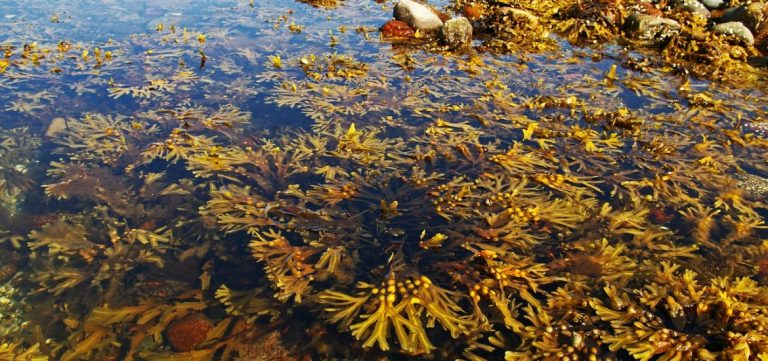

FUNDO VEGETADO SUBMERSO E OS ECOSSISTEMAS MARINHOS
Os fundos vegetados submerso compreendem uma parte
fundamental dos ecossistemas submersos que são essenciais para a vida, visto seu potencial para a regulação dos ambientes aquáticos. os fundos vegetados são compostos de
espécies vegetais aquáticas como pradarias, algas, fitoplâncton entre outras espécies vegetais. Assim abrigando grande parte da biodiversidade marinha, esses ecossistemas se distribuem ao longo do litoral brasileiro de maneira distintas e conforme as condições de clima e ambiente.
Os fundos vegetados submersos são fundamentais para a produção de oxigênio e também removem grandes quantidades de dióxido de carbono da atmosfera, ajudando a combater o aquecimento global.
Adaptações dos organismos ao ambiente marinho: O ambiente marinho apresenta muitos desafios aos organismos porque a água do mar é densa o suficiente para dar suporte aos organismos Possuindo alta viscosidade, Sofre variações na temperatura e salinidade. Contém quantidades variáveis de gases dissolvidos, Possui elevada transparência, Varia drasticamente em pressão de acordo com a profundidade. Os organismos marinhos possuem várias adaptações para as condições limitantes do ambiente marinho.
.
Necessidade de sustentação mecânica em condição: A água do mar é densa o suficiente para dar suporte aos organismos, visto que em suas adaptações os organismos marinhos não possuem esqueletos rígidos, apêndices, ou extensos sistemas radiculares, Em vez disso, eles contam com flutuabilidade e fricção.
Um dos fatores mais importantes que regulam a vida nesses ecossistemas é a luz solar, que afeta diretamente a distribuição de diferentes organismos. Podemos dividir estes ecossistemas em zonas fóticas (claras) e afóticas (escuras), sendo a primeira aquela que recebe a maior parte da luz solar, permitindo a fotossíntese, e a segunda onde as condições são tão extremas que apenas certas espécies conseguem se adaptar.
Outro factor chave nestes ecossistemas são as correntes oceânicas, que distribuem nutrientes vitais para as plantas que vivem no mar. As correntes garantem que a vida marinha seja constantemente nutrida e que os processos ecológicos continuem de forma otimizada.
Os ecossistemas marinhos desempenham um papel crucial na sustentabilidade do planeta. Não só são uma fonte constante de alimento para milhões de espécies , mas também regulam o clima global através da absorção de CO2. Além disso, contribuem para a produção de oxigênio, essencial para todas as formas de vida na Terra.
A flora marinha, como o fitoplâncton, é responsável pela produção da maior parte do oxigênio do planeta. Além disso, os ecossistemas marinhos são essenciais para processos bioquímicos como a fixação de nitrogênio e a decomposição de materiais orgânicos.
Apesar da sua imensa importância, os ecossistemas marinhos enfrentam diversas ameaças. A sobrepesca, a poluição, as alterações climáticas e a acidificação dos oceanos estão a afectar gravemente estas áreas. O aumento da temperatura da água está causando o branqueamento dos corais, o que tem um efeito devastador nos recifes.
Além disso, a poluição plástica e os derrames de produtos químicos estão a afetar a saúde dos mares. Estima-se que milhões de toneladas de plástico cheguem aos oceanos todos os anos, impactando diretamente a fauna marinha, desde aves até peixes e mamíferos marinhos. A proteção destes ecossistemas é essencial para garantir a sobrevivência de milhares de espécies.
A conservação dos ecossistemas marinhos é crucial para o futuro do nosso planeta. Várias organizações internacionais estão a trabalhar para criar áreas protegidas e mitigar o impacto humano nos oceanos. Práticas de pesca sustentáveis, redução de resíduos plásticos e controle da poluição são algumas das medidas que estão a ser tomadas para proteger estes ambientes vitais.
É fundamental que governos e empresas adotem medidas mais rigorosas para reduzir a sua pegada ecológica, e que a sociedade como um todo tome consciência da importância dos oceanos e da sua conservação.
conclusão
Os ecossistemas marinhos são fundamentais para o equilíbrio ecológico do planeta. Sem eles, a vida como a conhecemos não seria possível. Manter um equilíbrio saudável nestes ecossistemas é crucial para o bem-estar das gerações futuras.